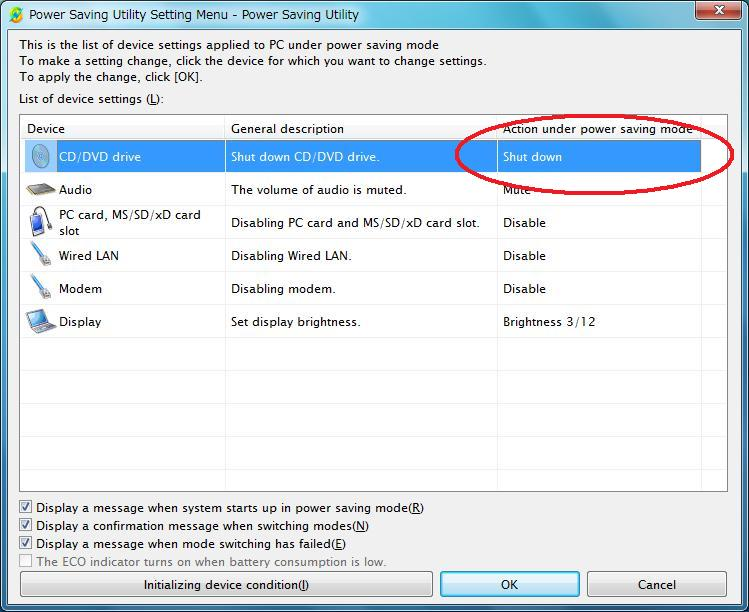
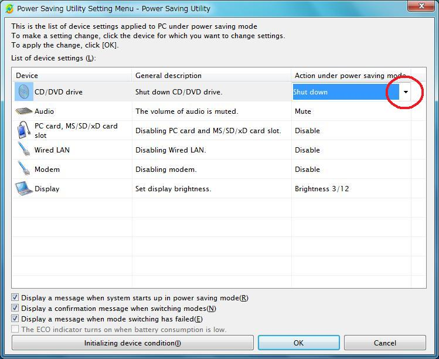
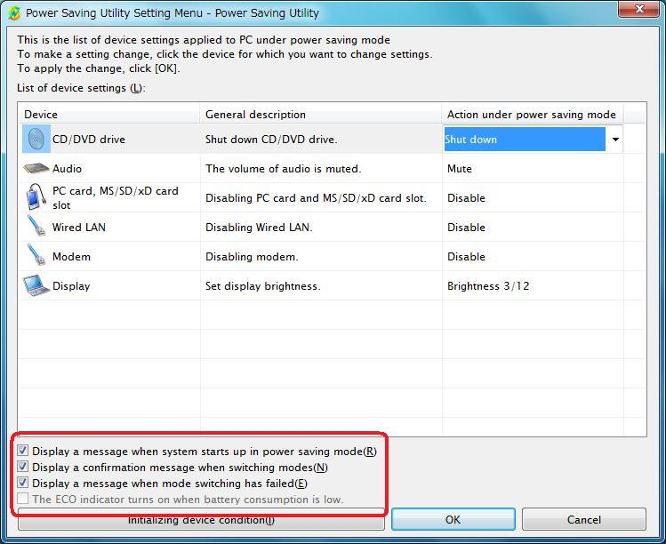
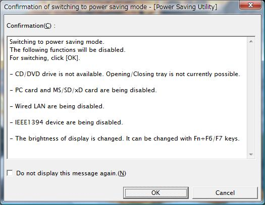
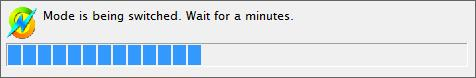
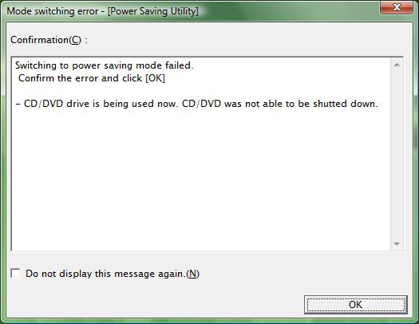
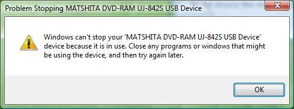
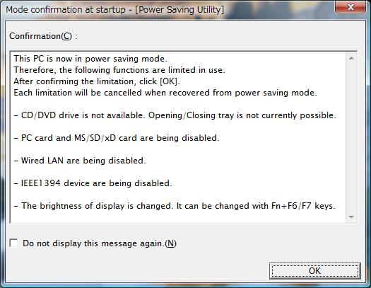

Power Saving Utility Manual
By using the Power Saving Utility, you can easily switch your PC to power saving mode. The power saving mode reduces power consumption so as to extend battery life.
What you can do with Power Saving Utility
- You can
switch between power saving mode and normal mode by using the Power Saving
Button.
 Go to instructions
Go to instructions - You can
switch between power saving mode and normal mode by tapping the icon in
the Notification Area at the bottom-right corner of the screen.Go to
instructions
- You can
set up the schemes for each device under power saving mode.Go to
instructions
PC
- Fujitsu LifeBook Series
OS
- Windows® 7 Home Basic 64bit
- Windows® 7 Home Premium 64bit
- Windows® 7 Professional 64bit
- Windows® 7 Enterprise 64bit
- Windows® 7 Ultimate 64bit
- Microsoft® Windows Vista® Ultimate 64bit
- Microsoft® Windows Vista® Home Premium 64bit
- Microsoft® Windows Vista® Home Basic 64bit
- Microsoft® Windows Vista® Business 64bit
- Microsoft® Windows Vista® Enterprise 64bit
- Microsoft® Windows® XP Home Edition 64bit Service Pack 2
- Microsoft® Windows® XP Professional 64bit Service Pack 2
In this setting, you set up the brightness of the display or power consumption level of each device under power saving mode. You also can set up whether or not to display a message on screen when you switch modes or when you start up under power saving mode. When device does not work properly you can initialize the device in this setting.
|
|
|
|
- Double-click the Power Saving Utility icon
(
 /
/ )
in the Notification Area at bottom-right of the screen. The [Power
Saving Utility Setting] window appears.
)
in the Notification Area at bottom-right of the screen. The [Power
Saving Utility Setting] window appears.
- Set up the schemes for each device under power saving mode.
- Click the [Scheme under power saving mode] cell for the device to set up.

appears
on the right side of selected cell.
- Click
 and select a scheme under
power saving mode.
and select a scheme under
power saving mode.

- Set whether or not to display a message on screen when you switch modes or when you start up under power saving mode.

- "Display a message when starting up under power saving mode."
If you click  into
into  , setting
status for each device under power saving mode is displayed when Windows starts
up under power saving mode.
, setting
status for each device under power saving mode is displayed when Windows starts
up under power saving mode.
- "Display a confirmation message when modes are switched."
If you click into  , setting
status (restricted devices/function) for each device under power saving mode is
displayed when switching normal mode to power saving mode, and setting status
(restriction removed device/function) for each device under normal mode (free
status) is displayed when switching power saving mode to normal mode.
, setting
status (restricted devices/function) for each device under power saving mode is
displayed when switching normal mode to power saving mode, and setting status
(restriction removed device/function) for each device under normal mode (free
status) is displayed when switching power saving mode to normal mode.
- "Display a message when switching of modes failed."
If you click  into
into  , information
for the device failing in switching modes is displayed when switching of modes
failed.
, information
for the device failing in switching modes is displayed when switching of modes
failed.
- "The ECO indicator turns on when battery consumption is low."
If you click  into
into  , the ECO indicator turns on when battery consumption is low. This
function is effective only on the product what have the ECO indicator.
, the ECO indicator turns on when battery consumption is low. This
function is effective only on the product what have the ECO indicator.
- Click [OK] button.
|
|
|
|
You can switch between power saving mode and normal mode using one of the following two methods:
- Switch by
pressing Power Saving Button on computer.Go to
instructions
- Switch
from the icon in Notification Area at bottom-right of the screen.Go to instructions
|
|
|
|
Switching with Power Saving Button
- Press the Instant / Power Saving button.
Refer to the system user's guide for the location of the Instant/Power Saving button.
When setting to display a message when
switching modes is made in accordance with  "Setting up
the schemes of each device under power saving mode", the following
confirmation message is displayed.
"Setting up
the schemes of each device under power saving mode", the following
confirmation message is displayed.

|
|
|
|
- Click [OK] button.
A progress indicator for switching mode appears.

When mode is switched, the icon in Notification Area at bottom-right on the screen is changed:
- When switching power saving mode to normal mode:
 ->
->

- When switching normal mode to power saving mode:
 ->
->

Switching with the icon in Notification Area at bottom-right on the screen
- Click the icon in Notification Area at bottom-right on the screen.
- When switching normal mode to power saving mode:
click

- When switching power saving mode to normal mode: click
- Select the following menu at the displayed menu:
- When switching normal mode to power saving mode:
Select "Switch to power saving mode."
- When switching power saving mode to normal mode:
Select "Switch to normal mode."
- When setting
to display a message when switching modes is made in accordance with "Setting up the schemes of each device under power
saving mode", the following confirmation message is displayed.
|
|
|
|
- Click [OK] button.
A progress indicator for switching mode appears.
When
mode is switched, the icon in Notification Area at bottom-right on the screen
is changed:
- When switching power saving mode to normal mode:
 ->
->

- When switching normal mode to power saving mode:
 ->
->

If switching fails
When
setting is made to display a message when switching fails in accordance with  "Setting
up the schemes of each device under power saving mode", the following
confirmation message is displayed. When the message is displayed, you can
verify the information of the device that failed.
"Setting
up the schemes of each device under power saving mode", the following
confirmation message is displayed. When the message is displayed, you can
verify the information of the device that failed.
After confirming the contents, click [OK].

|
|
|
|
When mode switching is done while a device (e.g., S-Multi drive, CD/DVD drive) is in use, the following message may appear on the screen:

When that happens, click [OK] button.
If you shut down Windows Vista under power saving mode, it starts up under power saving mode and a scheme limitation window for each device is displayed.

After confirming the contents, click [OK]
|
|
|
|
About the icon in Notification Area at bottom-right on the screen.
|
Icon |
Description |
|
|
PC is set under power saving mode. |
|
|
PC is set under normal mode. |
- Even though one PC is used under plural user accounts, power saving mode has only one setting per PC. Therefore, if another user logs on to the PC with another user account under power saving mode, the PC keeps power saving mode.
- Mode switching can be done only
in accordance with the methods instructed in this manual. PC's state
change to Standby/Resume/Hibernation or Reboot/Logoff will never
automatically make
sa change of present mode. - If the condition of hardware is changed intentionally after or during mode switching, this software does not reset the hardware settings.
Windows is a trademark of the Microsoft group of
companies.
Microsoft and Windows Vista are registered trademarks of Microsoft Corporation
in the United States and/or other countries.
Power Saving Utility is a product name of Fujitsu Limited.
All other company names or products names
mentioned herein are trademarks or registered trademarks of the respective
companies.
|
|
|
|
|
|
|
|
|
|
|
|
All Rights Reserved, Copyright© FUJITSU LIMITED 2005-2010